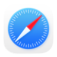

Herramienta de acceso
Navegadores Web
Un navegador web (browser) es el programa que permite
acceder y visualizar páginas web. No debe confundirse con un buscador:
el navegador es la herramienta con la que accedés a Internet,
mientras que el buscador es el sitio web que usás para encontrar información.
¿Qué hace un navegador?
Función principal
El navegador descarga el código HTML de una página web
desde Internet y lo interpreta para mostrarte el resultado visual: textos,
imágenes, videos y botones. Sin un navegador, el HTML sería solo texto plano.
Analogía: El navegador es como un lector de PDF: el archivo existe en la nube, pero necesitás el programa para poder verlo correctamente.
Diferencia clave
Navegador vs. Buscador
Es un error muy común confundir ambos conceptos:
- Navegador: programa instalado en tu computadora (Chrome, Firefox, Edge). Es la ventana desde la que accedés a Internet.
- Buscador: sitio web al que entrás desde el navegador (Google, Bing). Es un servicio para encontrar información.
Ejemplo: Usás Chrome (navegador) para entrar a Google (buscador) y buscar algo.
Google Chrome
El navegador más usado del mundo. Desarrollado por Google,
ofrece alta velocidad, sincronización con la cuenta de Google
y una enorme biblioteca de extensiones.
Disponible en: Windows, macOS, Linux, Android, iOS
⬇ Descargar Chrome

Mozilla Firefox
Navegador de código abierto, conocido por su enfoque en
la privacidad y la personalización. No pertenece
a ninguna gran corporación tecnológica.
Disponible en: Windows, macOS, Linux, Android, iOS
⬇ Descargar Firefox

Microsoft Edge
Navegador de Windows, integrado en el sistema operativo.
Basado en el mismo motor que Chrome (Chromium) e incorpora
Copilot (IA) de forma nativa.
Disponible en: Windows, macOS, Android, iOS
⬇ Descargar Edge

Safari
Navegador nativo de los dispositivos Apple
(iPhone, iPad, Mac). Optimizado para el ecosistema de Apple
y destacado por su eficiencia energética en dispositivos móviles.
Disponible en: macOS, iOS, iPadOS
Brave
Navegador centrado en la privacidad: bloquea
anuncios y rastreadores de forma predeterminada. Incluye su propio
motor de búsqueda (Brave Search) como opción.
Disponible en: Windows, macOS, Linux, Android, iOS
⬇ Descargar Brave

Opera
Navegador con funciones integradas como VPN gratuita,
bloqueador de anuncios y una barra lateral con acceso
rápido a redes sociales y mensajería.
Disponible en: Windows, macOS, Linux, Android, iOS
⬇ Descargar Opera